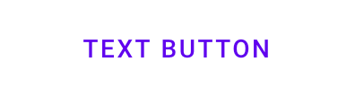
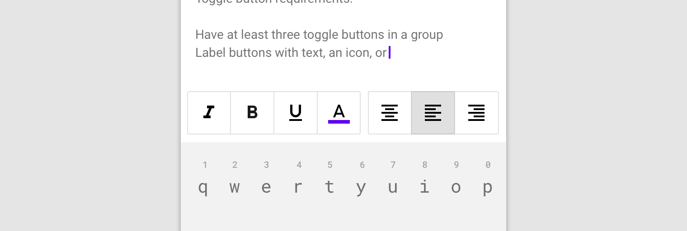

Buttons allow users to take actions, and make choices, with a single tap.
There are four types of buttons:
Note: Toggle buttons are implemented using the
mdc-icon-button component. For more information, see the
mdc-icon-button page.
npm install @material/button@use "@material/button";
@include button.core-styles;
The button will work without JavaScript, but you can enhance it to have a
ripple effect by instantiating MDCRipple on the root element.
See MDC Ripple for details.
import {MDCRipple} from '@material/ripple';
const buttonRipple = new MDCRipple(document.querySelector('.mdc-button'));Note: See Importing the JS component for more information on how to import JavaScript.
Material Design spec advises that touch targets should be at least 48 x 48 px. To meet this requirement, add the following to your button:
<div class="mdc-touch-target-wrapper">
<button class="mdc-button mdc-button--touch">
<div class="mdc-button__ripple"></div>
<span class="mdc-button__label">My Accessible Button</span>
<div class="mdc-button__touch"></div>
</button>
</div>
Note: The outer mdc-touch-target-wrapper element is only
necessary if you want to avoid potentially overlapping touch targets on
adjacent elements (due to collapsing margins).
Text buttons are typically used for less-pronounced actions, including those located in dialogs and cards. In cards, text buttons help maintain an emphasis on card content.

<button class="mdc-button">
<div class="mdc-button__ripple"></div>
<span class="mdc-button__label">Text Button</span>
</button>Text button with icon example

<button class="mdc-button">
<div class="mdc-button__ripple"></div>
<i class="material-icons mdc-button__icon" aria-hidden="true"
>bookmark</i
>
<span class="mdc-button__label">Text Button plus icon</span>
</button>Outlined buttons are medium-emphasis buttons. They contain actions that are important, but aren’t the primary action in an app.

<button class="mdc-button mdc-button--outlined">
<div class="mdc-button__ripple"></div>
<span class="mdc-button__label">Outlined Button</span>
</button>Outlined button with icon example

<button class="mdc-button mdc-button--outlined">
<div class="mdc-button__ripple"></div>
<i class="material-icons mdc-button__icon" aria-hidden="true">bookmark</i>
<span class="mdc-button__label">Outlined Button plus Icon</span>
</button>Contained buttons are high-emphasis, distinguished by their use of elevation and fill. They contain actions that are primary to your app.

<button class="mdc-button mdc-button--raised">
<span class="mdc-button__label">Contained Button</span>
</button>
Note: mdc-button--raised is applied for a contained button
with elevation, and mdc-button--unelevated is applied for a
contained button flush with the surface.
Contained button with icon example
<button class="mdc-button mdc-button--raised">
<div class="mdc-button__ripple"></div>
<i class="material-icons mdc-button__icon" aria-hidden="true"
>bookmark</i
>
<span class="mdc-button__label">Contained Button plus Icon</span>
</button>Toggle buttons can be used to select from a group of choices.
There are two types of toggle buttons:

MDC Web currently does not support toggle button groups.
Icons can be used as toggle buttons when they allow selection, or deselection, of a single choice, such as marking an item as a favorite.
For more details, see the
mdc-icon-button page.
We recommend using Material Icons from Google Fonts:
<head>
<link rel="stylesheet" href="https://fonts.googleapis.com/icon?family=Material+Icons">
</head>However, you can also use SVG, Font Awesome, or any other icon library you wish.
To add an icon, add an element with the
mdc-button__icon class inside the button element and set the
attribute aria-hidden="true". The icon is set to 18px to meet
legibility requirements.
<button class="mdc-button">
<div class="mdc-button__ripple"></div>
<i class="material-icons mdc-button__icon" aria-hidden="true">favorite</i>
<span class="mdc-button__label">Button</span>
</button>It’s also possible to use an SVG icon:
<button class="mdc-button">
<div class="mdc-button__ripple"></div>
<svg class="mdc-button__icon" aria-hidden="true" xmlns="http://www.w3.org/2000/svg" viewBox="...">
...
</svg>
<span class="mdc-button__label">Button</span>
</button>
Certain icons make more sense to appear after the button’s text label
rather than before. This can be accomplished by putting the icon markup
after the mdc-button__label element.
<button class="mdc-button">
<div class="mdc-button__ripple"></div>
<span class="mdc-button__label">Button</span>
<i class="material-icons mdc-button__icon" aria-hidden="true">favorite</i>
</button>
Note: The mdc-button__label element is
required in order for the trailing icon to be styled
appropriately.
To disable a button, add the disabled attribute directly to
the <button>, or set the
disabled attribute on the
<fieldset> containing the button. Disabled buttons
cannot be interacted with and have no visual interaction effect.
<button class="mdc-button" disabled>
<div class="mdc-button__ripple"></div>
<span class="mdc-button__label">Button</span>
</button>The following example shows text, contained, and outlined button types with Material Theming.

Before importing any MDC Web modules, set the theme colors in your Sass file:
@use "@material/theme" with (
$primary: #FEDBD0,
$on-primary: #442C2E
);
In this case we also want to customize the label color of the text and
outlined buttons, to fulfill color contrast requirements. Assuming that
you’ve applied the custom-text-button and
custom-outlined-button classes to your buttons:
@use "@material/button";
@include button.core-styles;
.custom-text-button,
.custom-outlined-button {
@include button.ink-color(#84565E);
}If you want to customize the theme for buttons without changing the theme across the app, you can also use CSS custom properties:
@use "@material/button";
@include button.core-styles;
.custom-text-button,
.custom-outlined-button {
--mdc-theme-primary: #FEDBD0;
--mdc-theme-on-primary: #442C2E;
@include button.ink-color(#84565E);
}For a more information on theming in general, see this page.
| CSS Class | Description |
|---|---|
mdc-button |
Mandatory. Defaults to a text button that is flush with the surface. |
mdc-button__ripple |
Mandatory. Indicates the element which shows the ripple styling. |
mdc-button--raised |
Optional. Styles a contained button that is elevated above the surface. |
mdc-button--unelevated |
Optional. Styles a contained button that is flush with the surface. |
mdc-button--outlined |
Optional. Styles an outlined button that is flush with the surface. |
mdc-button__label |
Recommended.* Indicates the element containing the button’s text label. |
mdc-button__icon |
Optional. Indicates the element containing the button’s icon. |
Note: The mdc-button__label element is required for
buttons with a trailing icon, but it is currently optional for buttons
with no icon or a leading icon. In the latter cases, it is acceptable
for the text label to simply exist directly within the
mdc-button element.
However, the mdc-button__label class may become mandatory
for all cases in the future so we recommended to always include
it.
To customize a button’s color and properties, you can use the following mixins.
MDC Button uses MDC Theme’s
primary color by default. Use the following mixins to
customize it.
| Mixin | Description |
|---|---|
filled-accessible($container-fill-color) |
Sets the container fill color for a contained (raised or unelevated) button, and updates the button’s ink, icon, and ripple colors to meet accessibility standards |
These mixins will override the color of the container, ink, outline or ripple. It is up to you to ensure your button meets accessibility standards.
| Mixin | Description |
|---|---|
container-fill-color($color) |
Sets the container fill color to the given color for an enabled button. |
disabled-container-fill-color($color) |
Sets the container fill color to the given color for a disabled button. |
icon-color($color) |
Sets the icon color to the given color for an enabled button. |
disabled-icon-color($color) |
Sets the icon color to the given color for a disabled button. |
ink-color($color) |
Sets the ink color to the given color for an enabled button, and
sets the icon color to the given color unless
icon-color is also used.
|
disabled-ink-color($color) |
Sets the ink color to the given color for a disabled button, and
sets the icon color to the given color unless
icon-color is also used.
|
density($density-scale) |
Sets density scale for button. Supported density scale values
(-3, -2, -1, 0).
|
height($height) |
Sets custom height for button. |
shape-radius($radius, $density-scale, $rtl-reflexive)
|
Sets rounded shape to button with given radius size.
$density-scale is only required when
$radius value is in percentage unit, defaults to
$density-default-scale. Set
$rtl-reflexive to true to flip radius values in RTL
context, defaults to false.
|
horizontal-padding($padding) |
Sets horizontal padding to the given number. |
outline-color($color) |
Sets the outline color to the given color for an enabled button. |
disabled-outline-color($color) |
Sets the outline color to the given color for a disabled button. |
outline-width($width, $padding) |
Sets the outline width to the given number (defaults to 2px) and
adjusts padding accordingly. $padding is only required
in cases where $horizontal-padding is also included
with a custom value.
|